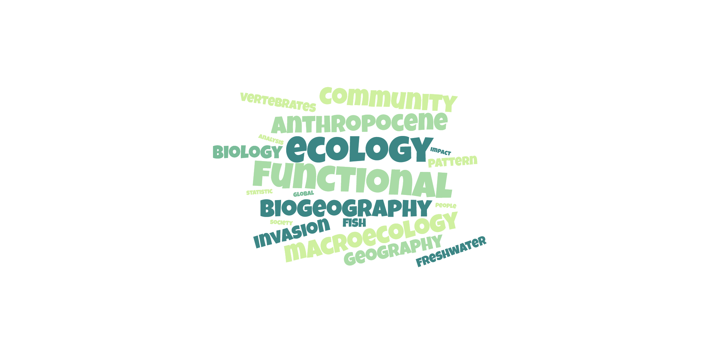

Pierre Bouchet


I study how human activities reshape biodiversity patterns and functional diversity. My research integrates trait-based ecology, macroecology and conservation biology to understand why certain vertebrates are more exploited than others, and how this affects extinction risk and ecosystem functioning.
I am a PhD student in ecology and biogeography at the CRBE, Université Toulouse III – Paul Sabatier, supervised by Sébastien Brosse and Aurèle Toussaint.
My research focuses on understanding how human uses of vertebrates (fisheries, hunting, trade, recreation) influence biodiversity patterns and functional diversity at global scales.
My thesis examines how humans selectively exploit vertebrate species and how this selection translates into non-random patterns in functional trait space. I investigate:
The work adopts a macroecological, cross-taxon perspective, relying on large trait datasets, global distribution information, and conservation assessments.

Links between functional traits, anthropogenic use, and the biodiversity crisis.
Consortium project on intraspecific trait variation (ITV) and its implications for functional ecology.
Selected publications will appear here soon.
Introductory zoology covering major animal lineages, comparative anatomy, and core concepts in organismal biology.
Ecological functioning of freshwater systems, community dynamics, and links between environmental gradients and biodiversity.
Chemical-mediated interactions (defense, communication, foraging) across trophic levels, with ecological and evolutionary perspectives.
Foundations of ecology: populations, communities, ecosystems, and key drivers of biodiversity patterns.
Intraspecific trait variation of freshwater fish from French Guiana — co-supervision.

Methods & topics
Quantitative & computational
Fieldwork & tropical experience
Examples of tropical freshwater fieldwork environments and sampling contexts.


Email: pierre.bouchet@utoulouse.fr
Feel free to reach out for collaborations or research inquiries.